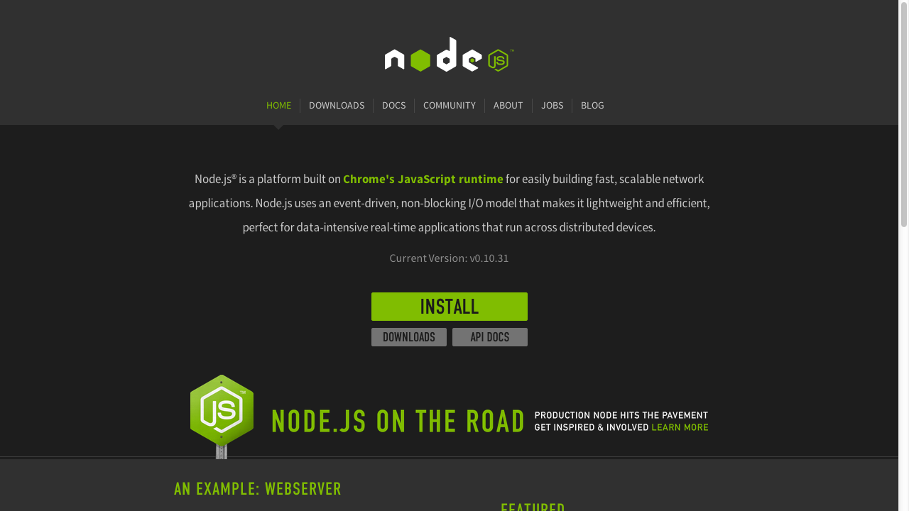
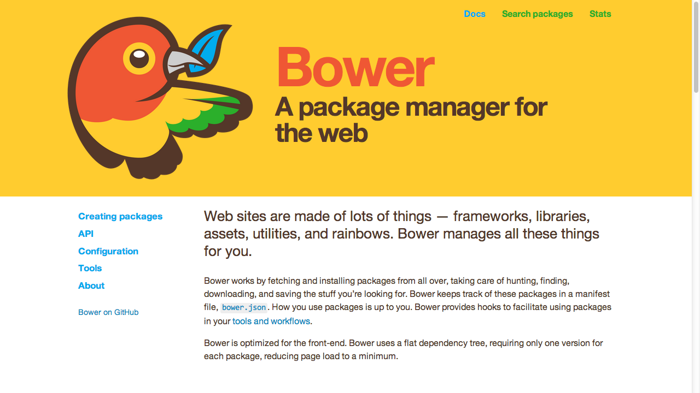
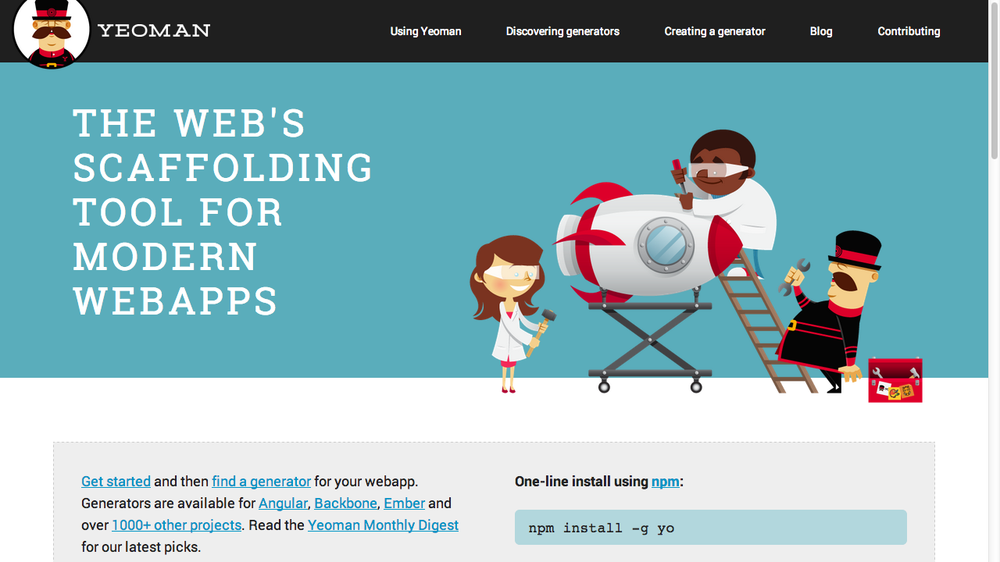
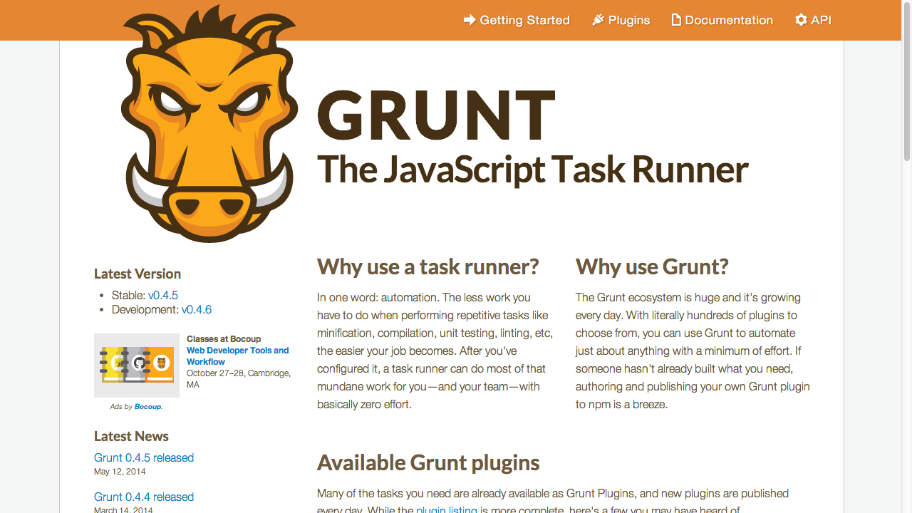

Node & AngularJS
Created by Scott Preston / @scottpreston
About Me
- Practice Lead AIS/ICC - JavaScript/Mobile
- Love JavaScript
- Robots & Smart Home Running in JS
NodeJS - Overview
- Server Side JS
- Node Tooling
Notice something about this Deck?
Reveal.JS
Served Up By Node Module (http-server)
What's Node JS?

Non-Blocking / Async
alert(1);
alert(2);
alert(3);
// vs
alert(1);
setTimeout(function() { alert(2); }, 2000);
alert(3);
// or
alert(1);
$.ajax(url, function() {alert(2)});
alert(3);
Node Is - Event Driven
alert(1);
setTimeout(url, function() {
event.emit("someevent");
}, 4000);
alert(3);
on("someevent", function() {
alert(2);
});
Node Installation
- Install Via http://nodejs.org
- Bundled with NPM (Node Package Manager)
Server Side
NodeJS - Hello World
console.log('hello world');
NodeJS - Web Server
var http = require('http');
var server = http.createServer(function (request, response) {
response.writeHead(200, {"Content-Type": "text/plain"});
response.end("Hello World\n");
});
server.listen(5000);
NPM
package.json
Tells you what to install or what's installed.
--save-dev, --save, -g
Node - Express
var express = require('express');
var app = express();
app.get('/', function (req, res) {
res.send('Hello World!');
});
var server = app.listen(3000, function () {
var host = server.address().address;
var port = server.address().port;
console.log('Example app listening at http://%s:%s', host, port);
});
Node - Express w/REST
// respond with "Hello World!" on the homepage
app.get('/', function (req, res) {
res.send('Hello World!');
});
// accept POST request on the homepage
app.post('/', function (req, res) {
res.send('Got a POST request');
});
// accept PUT request at /user
app.put('/user', function (req, res) {
res.send('Got a PUT request at /user');
});
// accept DELETE request at /user
app.delete('/user', function (req, res) {
res.send('Got a DELETE request at /user');
});
Node - MySQL
var mysql = require('mysql');
var connection = mysql.createConnection({
host: '192.168.188.10',
user: 'root',
password: 'password',
database: 'test'
});
connection.connect(function(err) {
console.log('connected as id ' + connection.threadId);
});
// read all
connection.query('SELECT * from contact', function (err, rows, fields) {
console.log(rows);
});
connection.end();
Node - MongoDB
var mongoose = require('mongoose');
mongoose.connect('mongodb://localhost/test');
var Cat = mongoose.model('Cat', { name: String });
var kitty = new Cat({ name: 'Tiger' });
kitty.save(function (err) {
if (err)
console.log('meow');
});
Node - Creating A Module
// the module Hello.js
var Hello = function() {};
Hello.prototype.sayHi = function() {
console.log('hello');
}
module.exports = Hello;
// to import
var h = require('./Hello.js');
h.sayHi();
Tooling
BowerJS

Sample - bower.json
{
"name": "test-app",
"version": "0.0.1",
"dependencies": {
"angular": "latest",
"angular-route": "latest",
"angular-mocks": "latest",
"angular-animate": "latest",
"angular-cookies": "latest",
"angular-loader": "latest",
"angular-resource": "latest",
"angular-sanitize": "latest",
"angular-touch": "latest",
"jquery": "latest",
"bootstrap": "latest",
"underscore": "latest",
"jasmine": "latest"
},
"private": true
}
Yoeman

Grunt

Gulp

Sample - gulpfile.js
// Include gulp
var gulp = require('gulp');
// Include Our Plugins
var jshint = require('gulp-jshint');
var uglify = require('gulp-uglify');
var rename = require('gulp-rename');
// Lint Task
gulp.task('lint', function () {
return gulp.src('vizify.js')
.pipe(jshint())
.pipe(jshint.reporter('default'));
});
// Concatenate & Minify JS
gulp.task('scripts', function () {
return gulp.src('vizify.js')
.pipe(rename('vizify.min.js'))
.pipe(uglify())
.pipe(gulp.dest('.'));
});
// Watch Files For Changes
gulp.task('watch', function () {
gulp.watch('vizify.js', ['lint', 'scripts']);
});
// Default Task
gulp.task('default', ['lint', 'scripts', 'watch']);
JS Hint
Preventing Simple Mistakes, Etc.
TestEm
Sample - testem.json
To Run - 'testem -ci'
{
"framework": "jasmine2",
"src_files": [
"hello.js",
"hello-spec.js"
]
}